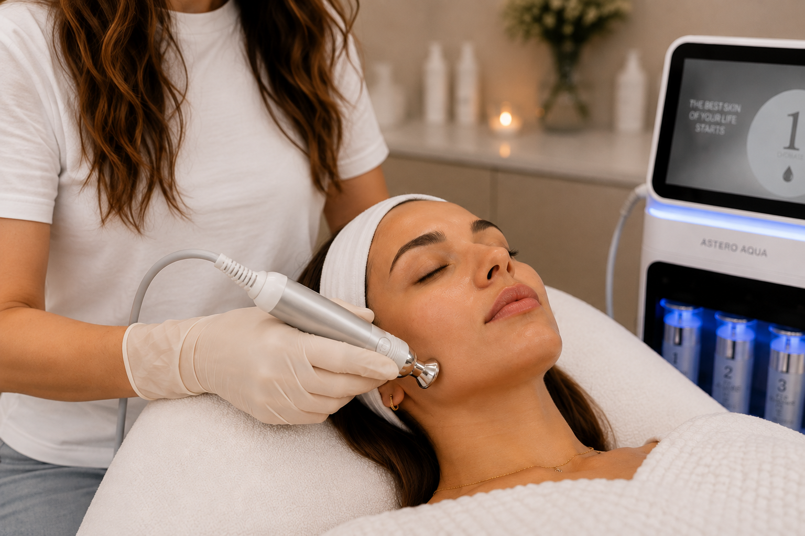
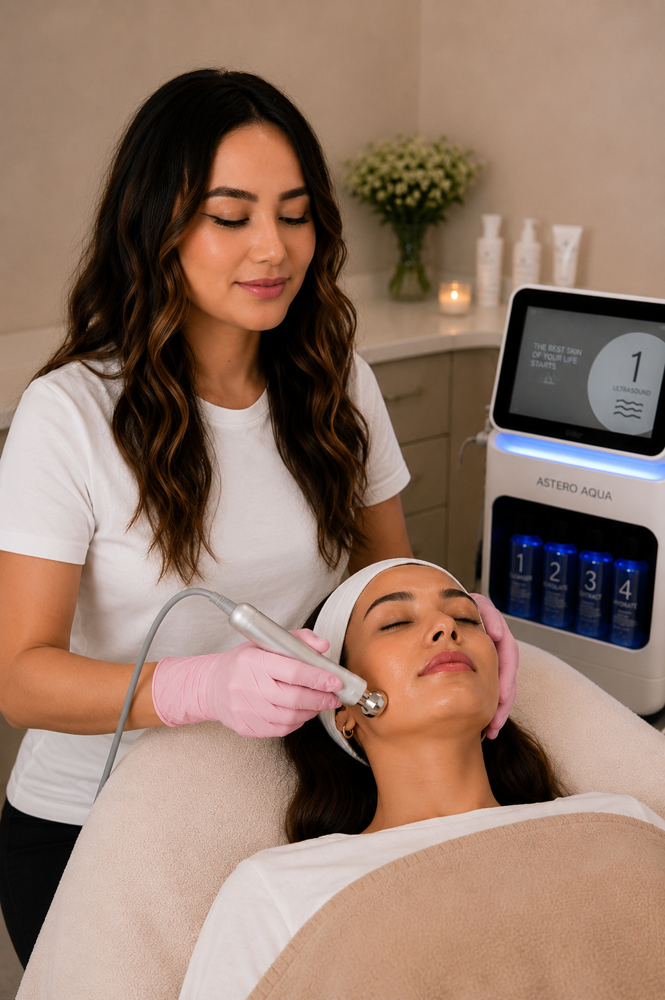

Diamond-tip exfoliatie
Een diamond-tip verfijnt gecontroleerd de bovenste huidlaag en helpt opgehoopte dode huidcellen te verwijderen voor een gladder huidoppervlak.

Diamond Hydrodermabrasion combineert mechanische exfoliatie met een diamond-tip en vacuümtechniek met het aanbrengen van verzorgende vloeistoffen of serums.
De diamond-tip verwijdert gecontroleerd een deel van de oppervlakkige dode huidcellen, terwijl vacuüm losgekomen huiddeeltjes en oppervlakkige ophopingen helpt afvoeren. Afhankelijk van het gebruikte systeem worden tegelijkertijd of aansluitend hydraterende en huidverzorgende ingrediënten aangebracht.
De behandeling is vooral gericht op een gladdere huidtextuur, een frissere glow, minder zichtbare oppervlakkige verstoppingen en een verzorgd, gehydrateerd huidgevoel.
Een diamond-tip verfijnt gecontroleerd de bovenste huidlaag en helpt opgehoopte dode huidcellen te verwijderen voor een gladder huidoppervlak.
Het vacuümsysteem voert losgekomen huiddeeltjes af en kan helpen oppervlakkige talg- en vuilophopingen uit de poriën te verwijderen.
Verzorgende vloeistoffen of serums worden afgestemd op de huidbehoefte, waardoor de huid na exfoliatie zacht, fris en gehydrateerd kan aanvoelen.

De intensiteit van de exfoliatie, het vacuüm en de verzorging worden afgestemd op jouw huidconditie, gevoeligheid en behandeldoel.
Make-up, SPF en oppervlakkig vuil worden verwijderd zodat de huid schoon en gelijkmatig behandeld kan worden.
De diamond-tip beweegt gecontroleerd over de huid en verwijdert oppervlakkige dode huidcellen zonder losse exfoliatiekristallen te gebruiken.
Vacuüm helpt de losgemaakte huiddeeltjes af te voeren en kan oppervlakkige ophopingen van talg en vuil uit de poriën verwijderen.
Tijdens de behandeling kunt u kiezen tussen twee krachtige serums: Salmon DNA Gold Ampoule of SkinBooster PDRN EXO. Deze verzorgende formules ondersteunen de hydratatie en huidconditie.
De huid wordt na de behandeling rustig afgekoeld en verzorgd.
Diamond Hydrodermabrasion kan passen wanneer je huid behoefte heeft aan oppervlakkige huidvernieuwing, een gladdere textuur, extra hydratatie of een frissere en egalere uitstraling.
De wetenschappelijke literatuur gebruikt vooral de term microdermabrasion voor gecontroleerde mechanische exfoliatie van de oppervlakkige epidermis. Diamond-tip systemen combineren dit principe in sommige apparaten met vacuüm/extractie en gelijktijdige serum-infusion.
Microdermabrasie verwijdert gecontroleerd een deel van het stratum corneum, de buitenste laag van de epidermis. Onderzoek kijkt naar veranderingen in huidtextuur, uitstraling, pigmentatie, fijne lijntjes en huidstructuur.
Een klinische studie uit 2023 onderzocht een diamond-tip apparaat dat exfoliatie, extractie en serum-infusion combineert. Zestien deelnemers kregen zes behandelingen om de twee weken, samen met thuisverzorging.
In de kleine open-label studie werden na de eerste behandeling verbeteringen gemeten in onder meer droogheid, radiance en textuur. Na twaalf weken werden daarnaast verbeteringen gerapporteerd in meerdere huidkwaliteitsparameters. Omdat behandeling én thuisverzorging gecombineerd werden en de studie klein was, kunnen deze resultaten niet één-op-één aan iedere Diamond Hydrodermabrasion worden toegeschreven.
De beschikbare studies gaan vooral over microdermabrasie en specifieke diamond-tip systemen. Apparaten, zuigkracht, serums en behandelprotocollen verschillen per aanbieder. Resultaten uit deze onderzoeken zijn daarom niet automatisch gelijk aan het resultaat van iedere individuele Diamond Hydrodermabrasion-behandeling.